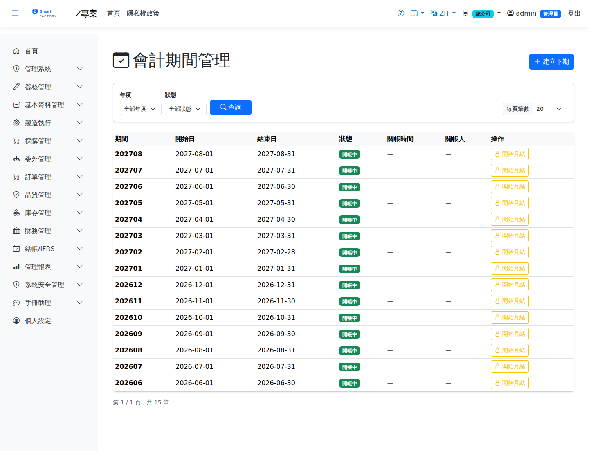

會計期間Accounting period
路由：/AccountingPeriod | 期間開關與過帳鎖管制Route: /AccountingPeriod | The period switch and posting lock
維護各月會計期間狀態：Open（可過帳）→ Closing（結帳中，僅允許調整分錄）→ Closed（關帳，全面擋單）。所有模組的過帳/作廢動作皆會檢查異動日期所屬期間，已關帳期間一律拒絕。Maintains the status of each monthly accounting period: Open (posting allowed) → Closing (closing in progress, only adjusting entries) → Closed (everything blocked). Every posting and voiding action in every module checks the period the transaction date falls in and is refused outright in a closed period.

會計期間畫面截圖（示意，實際欄位/資料依權限與查詢條件而異）Accounting period screenshot (illustrative; actual fields and data vary by permission and query criteria)
查詢Search
1
查詢列有The query bar offers 年度Year與 and 狀態Status兩個條件，兩者都可留白（「全部年度」「全部狀態」）；年度下拉只列出真的有資料的年份。設定條件後點「查詢」；欄位標題可點擊排序，清單下方有分頁導航。, both of which may be left blank ("All years", "All statuses"); the year dropdown lists only years that actually have data. Set them and click "Search"; column headers can be clicked to sort, and the paging controls sit below the list.
作業流程Process
關帳Close Period
1
月結檢查完成後將期間切至 Closing，僅保留調整分錄入帳。Once the month-end checks are done, switch the period to Closing so that only adjusting entries can be posted.
2
調整完畢切至 Closed 完成關帳。When the adjustments are done, switch to Closed to finish closing.
3
誤關需重開時請依權限審慎操作，重開期間內的補帳需完整記錄。Reopening a period closed by mistake needs care and the right permission, and everything posted while it is reopened has to be fully documented.
欄位說明Field reference
| 欄位Field | 說明Guide |
|---|---|
| 期間Period | 格式 YYYYMM（如 202607）。由「建立下一期」自動採番，不可手動輸入Format YYYYMM (e.g. 202607). It is numbered automatically by "Create next period" and cannot be typed in |
| 開始日 / 結束日Start date / End date | 該期間的自然月起訖日，決定單據入帳日落在哪一期The calendar start and end dates of the period, which decide the period a document's date falls in |
| 狀態Status | Open 開帳中（可自由入帳）／Closing 關帳中（僅允許調整分錄）／Closed 已關帳（禁止入帳）／Reopened 已重開Open (posting allowed freely) / Closing (only adjusting entries) / Closed (no posting at all) / Reopened |
| 關帳時間Closed At | 狀態切換為 Closed 的時間戳，系統自動寫入Timestamp when the status was switched to Closed, filled in by the system |
| 關帳人Closed By | 執行關帳的使用者，系統自動寫入The user who closed the period, filled in by the system |
| 備註Notes | 關帳／重開的補充說明Notes on closing or reopening |
相關畫面Related screens
月結作業Month-end close、管理日記帳Management Journal
注意：Note:關帳後任何模組對該期間的過帳/作廢都會被擋下並顯示明確訊息——這是防止回填歷史帳的主控制點。 Once a period is closed, any attempt by any module to post to it or void something in it is blocked with a clear message — this is the main control that stops history being backfilled.